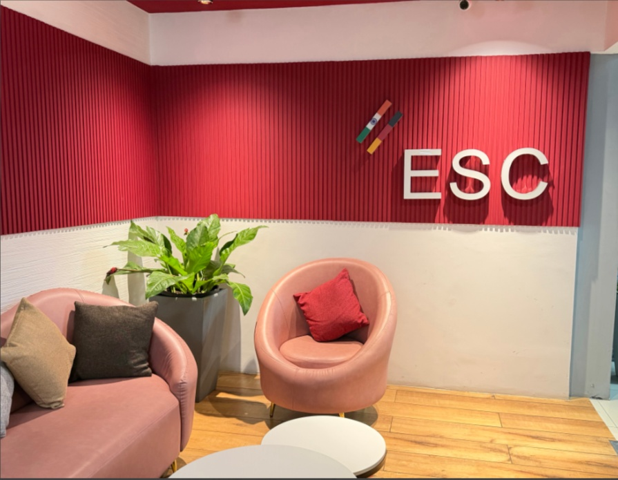

OUR MISSION
Your Trusted Partner in Business Process and Technology Services
We provide seamless business process management and technology services that help Utility companies focus on growth and strategic goals. Our core expertise includes BPM/BPO, market research, digitalization, software development, web and mobile applications, and website management across platforms such as SAP and Wilken. Through our dedicated Indo-German teams and group companies, we deliver reliable, customer-focused solutions tailored to business needs. We build long-term partnerships through quality-driven delivery, flexible offshore, nearshore, and on-site support, and a commitment to customer satisfaction.